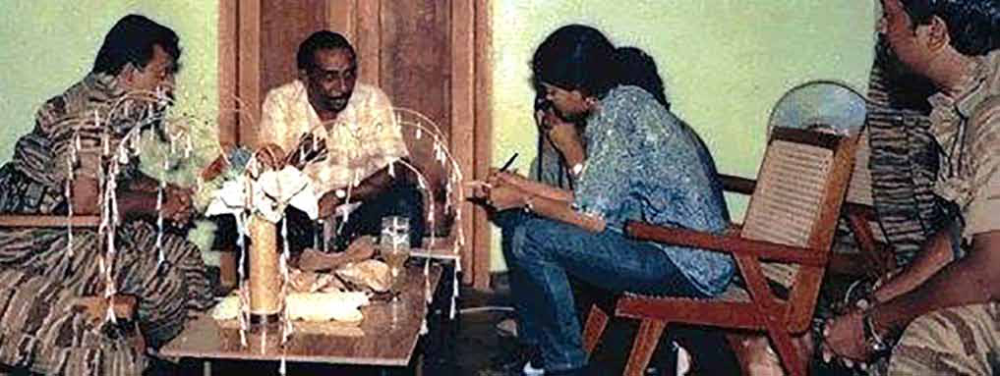
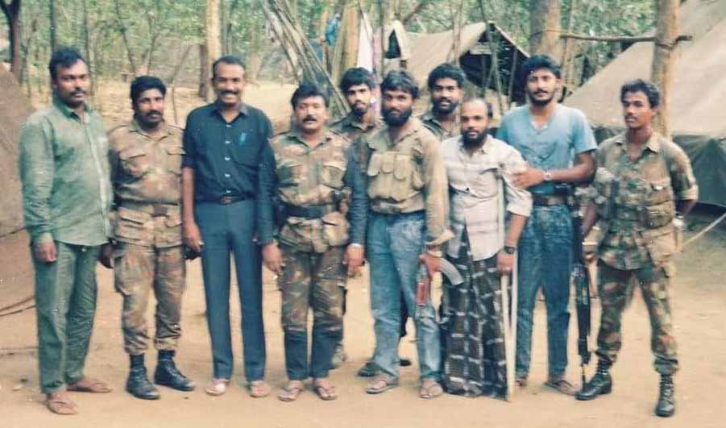
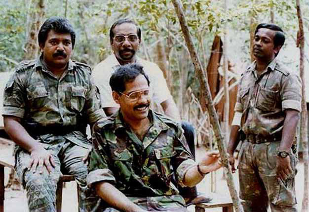

Inside the LTTE: Flattery, Surveillance, and Power Play
Inside the LTTE: Flattery, Surveillance, and Power Play
Jaffna Monitor hellojaffnamonitor@gmail.com 22 Inside the LTTE: Flattery, Surveillance, and Power Play Contrary to the popular belief that Prabhakaran was indifferent to praise or criticism, credible sources disclosed to the Jaffna Monitor that he valued and often encouraged commendation. These sources noted that key figures in Prabhakaran's inner circle, including Pottu Amman, Col. Shankar, Tamilselvan, and others, were known to frequently engage in what appeared to be excessive flattery towards their Leader. This inclination for flattery was further highlighted in an incident shared by a former LTTE member with the Jaffna Monitor. On Prabhakaran's 50th birthday on November 26, 2004, Babu, alias 'Holser' Babu, the chief of Cheran Vanipam, an LTTE business outlet, organized a massive Pongal ceremony to mark the LTTE chief's birthday. Some LTTE members criticized Holser Babu's lavish Pongal celebration for Prabhakaran's 50th birthday as overly sycophantic and wasteful. They discreetly shared their disapproval among trusted circles within the LTTE, wary of potential repercussions. Interestingly, our source, who was with Prabhakaran at the time, revealed that when Prabhakaran learned about the grand Pongal ceremony, he reacted with visible happiness and delight, indicating his appreciation for such grand gestures. Colonel Shankar: The LTTE's Infamous 'Thagaadu' and His Effects on Mahathaya Colonel Shankar, in particular, was widely known for his flattery attitude towards his Leader. In the Sri Lankan Tamil context, the terms 'Thagaadu vaithal' (jfL itj;jy;) or 'Anduthal' (mz;Ljy;) describe acts of sneaking or snitching. Shankar earned the nickname 'Thagaadu' Shankar or 'Andal Master' for his tendency to snitch on others within the LTTE to his boss. Even today, former high-ranking LTTE officers, whether living in Sri Lanka after rehabilitation or those who have escaped abroad, still refer to him by the moniker 'Thagaadu' Shankar in their conversations. To write this series of articles, I engaged in an extensive discussion with a former high-ranking member of the LTTE. Throughout our conversation, this individual repeatedly referred to Shankar as 'Thagadu' Shankar. The consistent use of this nickname, which essentially means a snitch or informant, highlights Shankar's particular reputation and perception among his peers in the LTTE. Shankar reportedly harboured a dislike for Mahathaya, although the reasons are known only to Shankar himself. Credible sources revealed to the Jaffna Monitor that Shankar systematically reported negative 'Holser' babu Prabhakaran being interviewed by Anitha Pratap, with Anton Balasingam and Shankar aka 'Thagadu' Shankar present.


Jaffna Monitor hellojaffnamonitor@gmail.com 23 information about Mahathaya to Prabhakaran. This snitching likely influenced Prabhakaran's perceptions and decisions regarding Mahathaya. A valuable source shared an intriguing anecdote with the Jaffna Monitor, revealing an incident highlighting the internal dynamics and trust issues within the LTTE leadership. The incident occurred during a period of peace with the Premadasa government. 'Thenisai' Sellappa, a well-known Tamil folk music exponent and staunch supporter of the LTTE, visited an LTTE-controlled area from India. One of the events organized by the LTTE took place on the city grounds in Vavuniya in front of the Vavuniya court. Mahathaya was giving the introductory speech at the stadium. During this event, the source encountered Shankar, who had a friendly rapport with the source. He pointed to Mahathaya and remarked, "Michael made a mistake worthy of killing him." Mahathaya was also called Michael, but only by a few people within the LTTE, including Shankar. This statement piqued the source's curiosity, prompting further inquiry. Shankar then disclosed critical operational details about the LTTE's internal communication system. He explained that in those days, every LTTE base had a yellow box where fighters could directly write letters to their Leader, Prabhakaran. These letters were meant to be confidential and directly delivered to Prabhakaran without any intermediaries reading them. While in the Jaffna region, a dedicated LTTE cadre loyal to Prabhakaran was appointed to collect these letters from each Base, this system was not feasible in more remote areas like the Vanni region. In these places, the Base in charge, who had a key to the yellow box, was responsible for collecting and forwarding the letters to Prabhakaran. According to Shankar, Mahathaya violated this protocol by opening and reading these letters before they reached Prabhakaran, a significant breach of trust and loyalty in the eyes of both Prabhakaran and the LTTE. The source believed that Shankar, known for his tendency to snitch on Prabhakaran, would have undoubtedly informed him about this incident. This report would have further increased the resentment From left: LTTE Member Rahu, Deputy Leader Mahathaya, Tamil Nadu Politician Vaiko (Vaiyapuri Gopalsamy), LTTE Leader Prabhakaran, Prabhakaran's Bodyguard Thiyagu, Yogi, Prabhakaran's Chief of Bodyguard Sornam, Kiddu, Pottu Amman, and Banu at the Punithabhoomi Base in Nittakaikkulam, Mullaitivu.

Jaffna Monitor hellojaffnamonitor@gmail.com 24 and insecurity that Prabhakaran already harboured towards Mahathaya. Our source believes that this event implies Mahathaya's readiness to defy Prabhakaran, showing a willingness to breach established protocols and ignore Prabhakaran's orders. Such actions represented a notable departure from the strict loyalty and obedience demanded within the LTTE's hierarchical framework. Balasingham's Reservations About Mahathaya Anton Balasingham, the chief strategist of the LTTE, also harbored a dislike for Mahathaya, as revealed by sources close to the LTTE. Affectionately known within the organization as Bala Anna, Balasingham had specific reservations about Shankar and Mahathaya despite his occasional differences with various figures, including Prabhakaran. Credible sources indicate that Balasingham's distrust and disbelief in Mahathaya might have influenced the mindset of the LTTE's Leader, Prabhakaran. An interesting story shared by our source highlights Balasingham's influence. Following Mahathaya's execution, Prabhakaran was considering appointing Shankar as the new head of the political wing. However, Balasingham, who strongly opposed both Shankar and Mahathaya, intervened. His intervention was crucial in convincing Prabhakaran to select Thamilselvan as the LTTE's political commissar in 1994. Pottu Amman's Ascendancy and Mahathaya's Decline in the LTTE Sources closely associated with Mahathaya describe him as somewhat immature in many aspects. His nature as a people person rendered him highly emotional, and he was known for harbouring grudges. Like a child, this tendency to take offence quickly led to him ceasing communication with other leaders within the LTTE. Figures like Shankar, Anton Balasingham, and other prominent members developed a dislike for Mahathaya primarily due to these childish behaviours. Another individual who disliked Mahathaya within the LTTE was Pottu Amman, the intelligence chief of the LTTE; however, in the case of Pottu Amman, his dislike for Mahathaya was not just a matter of personal animosity. Credible sources conveyed to the Jaffna Monitor that Pottu Amman's aversion towards Mahathaya was driven by his own agenda. They point out that Pottu Amman had a particular plan concerning Mahathaya. Observing the LTTE's history, they mentioned a clear, direct correlation between the decline of Mahathaya and the ascent of Pottu Amman within the organization's hierarchy. Pottu Amman assumed leadership of the LTTE's intelligence wing in mid-1988, holding the position for 21 years until the LTTE's military defeat in May 2009. While his role as second-in-command was never formally declared, he effectively held this position by 2009. Initially, during Mahathaya's tenure as the LTTE's number 2, Pottu Amman's presence within the organization was less prominent. However, with the gradual decline of Mahathaya's influence, Pottu Amman's stature within the LTTE grew, ultimately leading him to become the de facto second-in- command. This article will be continued in our next issue, where we delve further into the story. From left: LTTE Leader Prabhakaran, LTTE's Head of Arms Procurement Kumaran Pathmanathan alias KP, with Anton Balasingam and Shankar at the Punithabhoomi Base in Nittakaikkulam, Mullaitivu
